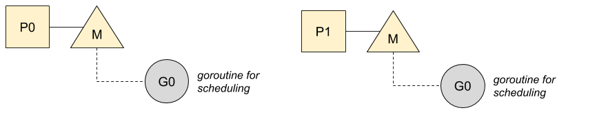
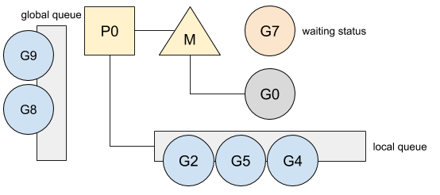
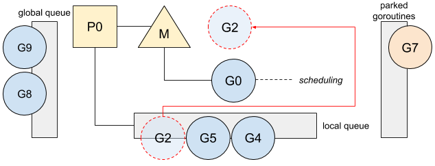
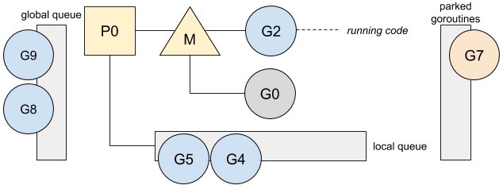
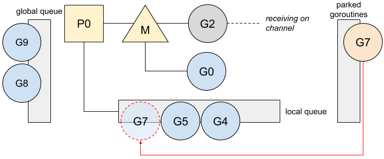
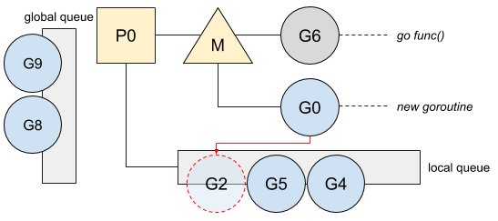

Go: g0
ℹ️ 本文基于 Go 1.13
在 Go 中创建的所有 Goroutine 都会被一个内部的调度器所管理。Go 调度器尝试为所有的 Goroutine 分配运行时间，并且在当前的 Goroutine 阻塞或者终止的时候，Go 调度器会通过运行 Goroutine 的方式使所有 CPU 保持忙碌状态。这个调度器实际上是作为一个特殊的 Goroutine 运行的。
调度 goroutine
Go 使用 GOMAXPROCS 变量限制同时运行的 OS 线程数量，这意味着 Go 必须对每个运行着的线程上的 Goroutine 进行调度和管理。这个调度的功能被委托给了一个叫做 g0 的特殊的 goroutine， g0 是为每个 OS 线程创建的第一个 goroutine：

之后，g0 会把就绪状态的 Goroutine 调度到线程上去运行。
我建议你阅读我的文章“ Go: Goroutine, OS 线程及 CPU 管理”，来了解更多关于 P，M，G 模型的信息。
为了更好的理解 g0 的调度策略，来回顾下 channel 的用法。下面是一个 Goroutine 在向 channel 发送数据是阻塞的例子：
ch := make(chan int)
[...]
ch <- v
当在 channel 上阻塞时，当前的 Goroutine 会被停放（ parked ），即处于等待状态（ waiting mode ），并且不会被放在任何 Goroutine 队列中：

之后，g0 会替换 Goroutine 并进行一轮调度：

本地队列在调度过程中具有优先级，2 号 Goroutine 会被运行：

我建议你阅读我的文章“ Go: 调度器中的工作窃取 (Work-Stealing) ” 来了解更多关于调度优先级的细节。
一旦有接收者读取 channel 中的数据，7 号 Goroutine 就会解除阻塞状态：
v := <-ch
收到消息的 Goroutine 会切换到 g0，并且通过放入本地队列的方式将该 Goroutine 从停放状态解锁：

虽然这个特殊的 Goroutine 管理调度策略，但这并不是它唯一的工作，它还负责着更多的工作。
职责
与普通 Goroutine 不同的是，g0 有着固定且更大的栈，这使得在需要更大的栈的时候，以及栈不宜增长的时候，Go 可以进行操作。在 g0 的职责中，我们可以列出：
- Goroutine 创建。当调用
go func(){ ... }()或go myFunction()时，Go 会在把它们放入本地队列前，将函数的创建委托给g0去做：

新创建的 Goroutine 优先运行，并且被放在本地队列的顶部。
建议阅读我的文章“Go: 并发及调度器的亲合性原理”了解更多关于 Goroutine 优先级的信息。
- defer 函数分配。
- 垃圾收集操作，比如 STW（ stopping the world ），扫描 Goroutine 的栈，以及一些标记清理操作。
- 栈增长。当需要的时候，Go 会增加 Goroutine 的大小。这个操作是由
g0的 prolog 函数完成的。
这个特殊的 Goroutine 涉及许多其他操作（较大空间的对象分配，cgo 等），需要较大的栈来保证我们的程序进行更高效的管理操作，以保持程序的低内存打印效率。
via: https://medium.com/a-journey-with-go/go-g0-special-goroutine-8c778c6704d8